Jalan is Kultum’s series of community walking audits designed around chats, grubs, and mobile app. Blending inclusive lived experiences with urban design tools, we centre walkability, accessibility, and safety through specific lenses of the under-represented groups.
Jalan means “walk” in Bahasa Indonesia. Within Kultum’s active travel and co-design initiatives, Jalan signifies more than physical movement. It is a metaphor for community resilience, collective action, and the everyday right to feel safe and welcome in public space.
Our Method
Our Scientific Alignment
Jalan references and supports the goals of:
Our participatory audit method is inspired by:


Maén is Kultum’s series of youth- and family-led creative co-design programme. Building on Jalan’s walking audits, Maén transforms spatial audits into playful, participatory design sessions. Through games, drawing, mapping, and storytelling, participants imagine and prototype the public spaces they want to see.
Maén means play in Bahasa Indonesia. For us, play is not recreational alone - it is analytical, relational, and political. It reveals how space feels, who it welcomes, and where change is needed.
We believe play belongs to everyone - across age, background, and ability. In Maen, communities become designers of their own environments.
Our Methods
Our Scientific Alignment
Maén aligns with evidence-based research on:
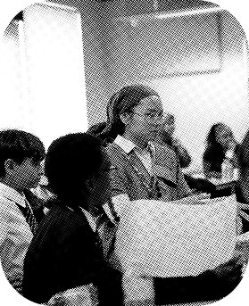
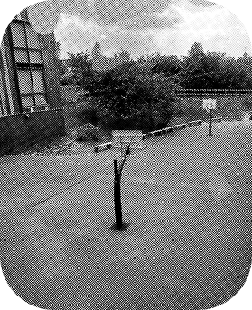
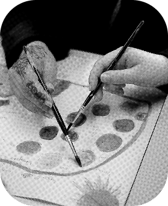
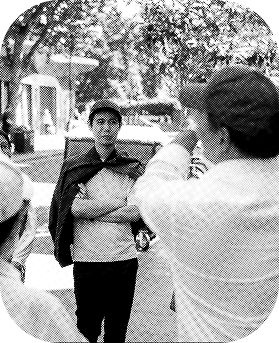
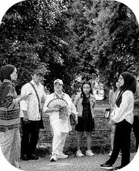
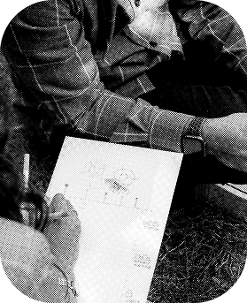
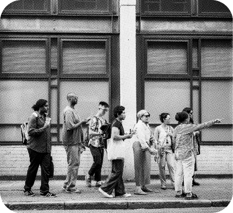
A community walking audit introducing Jalan-Co-ffee & Co-Design with Give Endlessly in bustling Old Street area. This launch invited participant to reflect on basic knowledge in walking infrastructure and how urban environments shape everyday experience. Insights contributed to conversations around inclusive streets and grass-roots-led place engagement.
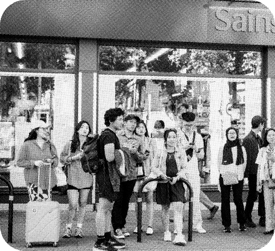
An intergenerational walking and play session exploring movement, memory, and neighbourhood identity, while celebrating 17an, Indonesian independence day in the park. Participants mapped how they experience Queensway, Bayswater, and Kensington Gardens, highlighting memory, joy, and barriers around outside play and outdoor activities, from London to where they come from.
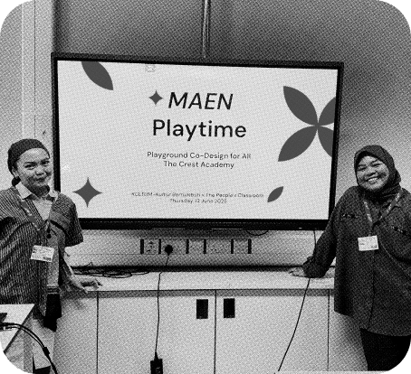
An active play-based spatial learning workshop for the new school playground consultation, using design and planning games to explore accessibility, safety, equity, and inclusion in outside play. Delivered in partnership with The People’s Classroom, the session encourage students to imagine more inclusive playground, inside-out.
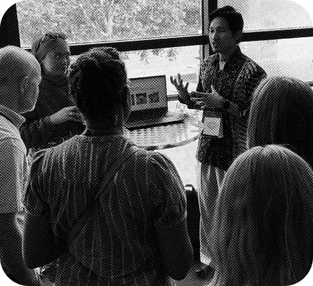
A rapid knowledge-sharing session on culture-led approaches to active travel and inclusive engagement. Kultum shared insights from Jalan and Maen as tools for embedding lived experience into sustainable transport conversations.
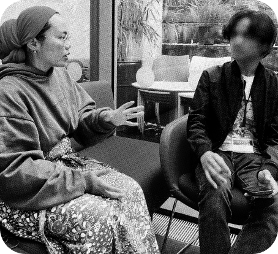
A dialogue-based workshop exploring youth voice in urban futures. Participants examined how culture, sustainability, and mobility intersect in shaping future cities.
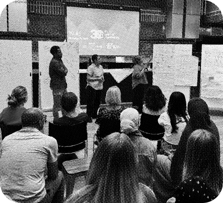
A facilitated discussion contributing grass-roots perspectives to strategic city planning. Kultum brought lived experience and skill sets in built environment into a wider consultation on future London around accessibility, public space, and long-term sustainability.
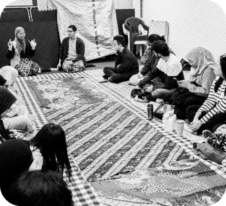
An intergenerational gathering blending faith, food, and dialogue around Ramadan and International Women’s Day 2025. The event centred Muslim women’s voices in conversations about belonging, communal care, and their roles in wider community.
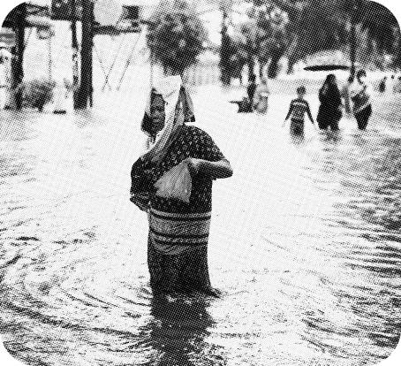
A community-led fundraiser responding to climate impacts in Aceh and North Sumatra. The initiative connects diaspora communities with climate justice action through cultural gathering and collective care.
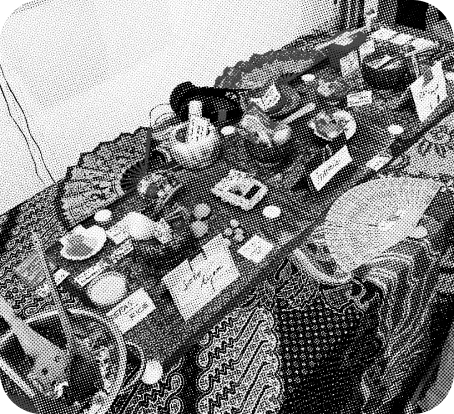
A collaborative and interactive exhibition exploring low-waste kitchen as part of Indonesian food culture and resistance through cultural storytelling. The project highlighted how everyday practices - cooking, sharing, and cleaning - are forms of climate action.
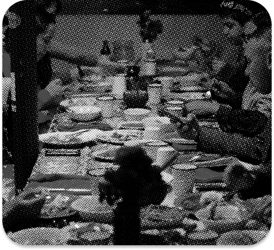
Hajatan Kultum marked the public launch of Kultum - bringing together community, culture, and collaboration in one shared space. Rooted in Indonesian traditions of gathering, the event blended dialogue, food, storytelling, and reflection of our commitment, our future initiatives, and our passion in sustainability.